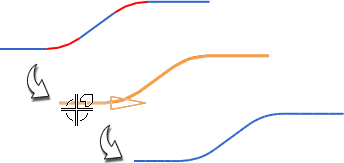

连结曲线
连结曲线
预计完成这堂课需要：4–6 分钟
使用此命令可将一连串曲线和/或边连结为连结曲线特征或非关联的 B 样条。
连结曲线特征
在希望保持原始曲线与输出样条之间的关联时创建特征。只能通过编辑原始曲线来控制特征的形状。
B 样条
如果要直接编辑输出样条，则创建非关联的 B 样条。输出样条可以是逼近原始链的 3 次或 5 次样条，也可以是精确表示原始链的常规样条。
下图显示连结起来以创建连结曲线特征的基本圆弧链与线链。

在“制图”中，可以使用连结曲线命令来连结先前根据简化成员视图边创建的曲线。有关详细信息，请参见“制图帮助”。
位于何处？
|
应用模块 |
建模 |
|
工具条 |
曲线→连结曲线 |
|
菜单 |
插入→来自曲线集的曲线→连结 |